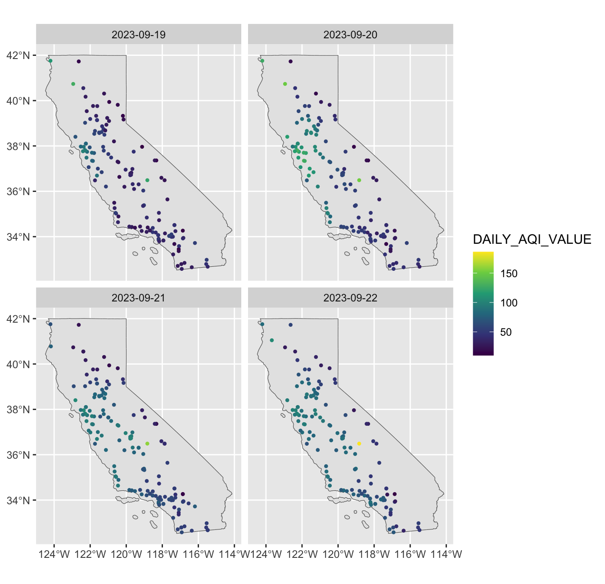

MATH167R: Advanced visualizations
Overview of today
- Visualizing spatial data
- Animations
- Project work time
Example: PM 2.5 data
The EPA provides daily data on air quality for monitoring stations across the country, which you can download here. The below code downloads a subset of this data from the course website for the pollutant PM 2.5 (atmospheric particulate matter with a diameter of less than 2.5 micrometers) and AQI for 2023.
Example: PM 2.5 data
| Date | Source | Site ID | POC | Daily Mean PM2.5 Concentration | UNITS | DAILY_AQI_VALUE | Site Name | DAILY_OBS_COUNT | PERCENT_COMPLETE | AQS_PARAMETER_CODE | AQS_PARAMETER_DESC | CBSA_CODE | CBSA_NAME | STATE_CODE | STATE | COUNTY_CODE | COUNTY | SITE_LATITUDE | SITE_LONGITUDE |
|---|---|---|---|---|---|---|---|---|---|---|---|---|---|---|---|---|---|---|---|
| 01/01/2023 | AQS | 060010007 | 3 | 3.7 | ug/m3 LC | 15 | Livermore | 1 | 100 | 88101 | PM2.5 - Local Conditions | 41860 | San Francisco-Oakland-Hayward, CA | 06 | California | 001 | Alameda | 37.68753 | -121.7842 |
| 01/02/2023 | AQS | 060010007 | 3 | 2.7 | ug/m3 LC | 11 | Livermore | 1 | 100 | 88101 | PM2.5 - Local Conditions | 41860 | San Francisco-Oakland-Hayward, CA | 06 | California | 001 | Alameda | 37.68753 | -121.7842 |
| 01/03/2023 | AQS | 060010007 | 3 | 3.6 | ug/m3 LC | 15 | Livermore | 1 | 100 | 88101 | PM2.5 - Local Conditions | 41860 | San Francisco-Oakland-Hayward, CA | 06 | California | 001 | Alameda | 37.68753 | -121.7842 |
| 01/04/2023 | AQS | 060010007 | 3 | 2.7 | ug/m3 LC | 11 | Livermore | 1 | 100 | 88101 | PM2.5 - Local Conditions | 41860 | San Francisco-Oakland-Hayward, CA | 06 | California | 001 | Alameda | 37.68753 | -121.7842 |
| 01/05/2023 | AQS | 060010007 | 3 | 4.7 | ug/m3 LC | 20 | Livermore | 1 | 100 | 88101 | PM2.5 - Local Conditions | 41860 | San Francisco-Oakland-Hayward, CA | 06 | California | 001 | Alameda | 37.68753 | -121.7842 |
| 01/06/2023 | AQS | 060010007 | 3 | 9.2 | ug/m3 LC | 38 | Livermore | 1 | 100 | 88101 | PM2.5 - Local Conditions | 41860 | San Francisco-Oakland-Hayward, CA | 06 | California | 001 | Alameda | 37.68753 | -121.7842 |
Example: PM 2.5 data
Date Source Site ID POC
Length:51541 Length:51541 Length:51541 Min. : 1.000
Class :character Class :character Class :character 1st Qu.: 2.000
Mode :character Mode :character Mode :character Median : 3.000
Mean : 2.634
3rd Qu.: 3.000
Max. :12.000
Daily Mean PM2.5 Concentration UNITS DAILY_AQI_VALUE
Min. : -3.000 Length:51541 Min. : 0.00
1st Qu.: 3.900 Class :character 1st Qu.: 16.00
Median : 6.500 Mode :character Median : 27.00
Mean : 7.823 Mean : 30.64
3rd Qu.: 10.000 3rd Qu.: 42.00
Max. :235.100 Max. :285.00
Site Name DAILY_OBS_COUNT PERCENT_COMPLETE AQS_PARAMETER_CODE
Length:51541 Min. :1 Min. :100 Min. :88101
Class :character 1st Qu.:1 1st Qu.:100 1st Qu.:88101
Mode :character Median :1 Median :100 Median :88101
Mean :1 Mean :100 Mean :88177
3rd Qu.:1 3rd Qu.:100 3rd Qu.:88101
Max. :1 Max. :100 Max. :88502
AQS_PARAMETER_DESC CBSA_CODE CBSA_NAME STATE_CODE
Length:51541 Min. :12540 Length:51541 Length:51541
Class :character 1st Qu.:31080 Class :character Class :character
Mode :character Median :40140 Mode :character Mode :character
Mean :35282
3rd Qu.:41860
Max. :49700
NA's :3920
STATE COUNTY_CODE COUNTY SITE_LATITUDE
Length:51541 Length:51541 Length:51541 Min. :32.58
Class :character Class :character Class :character 1st Qu.:34.21
Mode :character Mode :character Mode :character Median :36.60
Mean :36.38
3rd Qu.:37.97
Max. :41.76
SITE_LONGITUDE
Min. :-124.2
1st Qu.:-121.5
Median :-119.8
Mean :-119.8
3rd Qu.:-118.2
Max. :-115.5
Warm-up: PM 2.5 data
Work with the people around you to identify:
- Where and when was the highest
DAILY_AQI_VALUEobserved in 2023? - Which site had the highest median
DAILY_AQI_VALUEin 2023? - How many monitoring sites are in Santa Clara County?
- What is the name of the site in this dataset that is closest to SJSU’s campus?
- What is the median
DAILY_AQI_VALUEfor this site in 2023?
Warm-up: PM 2.5 data
Answers:
- Yreka on August 28 (AQI = 285)
- Cortina Indian Rancheria
- 3
- San Jose - Jackson
- 29
Data wrangling
Note that the Date variable is a character–we can convert this into a Date class object using the lubridate package.
Date Source Site ID POC
Min. :2023-01-01 Length:51541 Length:51541 Min. : 1.000
1st Qu.:2023-03-26 Class :character Class :character 1st Qu.: 2.000
Median :2023-06-21 Mode :character Mode :character Median : 3.000
Mean :2023-06-23 Mean : 2.634
3rd Qu.:2023-09-18 3rd Qu.: 3.000
Max. :2023-12-31 Max. :12.000
Daily Mean PM2.5 Concentration UNITS DAILY_AQI_VALUE
Min. : -3.000 Length:51541 Min. : 0.00
1st Qu.: 3.900 Class :character 1st Qu.: 16.00
Median : 6.500 Mode :character Median : 27.00
Mean : 7.823 Mean : 30.64
3rd Qu.: 10.000 3rd Qu.: 42.00
Max. :235.100 Max. :285.00
Site Name DAILY_OBS_COUNT PERCENT_COMPLETE AQS_PARAMETER_CODE
Length:51541 Min. :1 Min. :100 Min. :88101
Class :character 1st Qu.:1 1st Qu.:100 1st Qu.:88101
Mode :character Median :1 Median :100 Median :88101
Mean :1 Mean :100 Mean :88177
3rd Qu.:1 3rd Qu.:100 3rd Qu.:88101
Max. :1 Max. :100 Max. :88502
AQS_PARAMETER_DESC CBSA_CODE CBSA_NAME STATE_CODE
Length:51541 Min. :12540 Length:51541 Length:51541
Class :character 1st Qu.:31080 Class :character Class :character
Mode :character Median :40140 Mode :character Mode :character
Mean :35282
3rd Qu.:41860
Max. :49700
NA's :3920
STATE COUNTY_CODE COUNTY SITE_LATITUDE
Length:51541 Length:51541 Length:51541 Min. :32.58
Class :character Class :character Class :character 1st Qu.:34.21
Mode :character Mode :character Mode :character Median :36.60
Mean :36.38
3rd Qu.:37.97
Max. :41.76
SITE_LONGITUDE
Min. :-124.2
1st Qu.:-121.5
Median :-119.8
Mean :-119.8
3rd Qu.:-118.2
Max. :-115.5
Wildfire season 2023

Wildfire season 2023

Working with spatial data
We can’t get an idea of how air quality varies over space using univariate summaries like these. Ideally, we could plot the PM 2.5 or AQI measurements on a map of California.
Naively working with latitude/longitude
Naively working with latitude/longitude
Compare with January 1:
Naively working with latitude/longitude
We can only get so far just treating longitude and latitude as x and y. In particular, near the poles, we will get large amounts of distortion:

Simple features
Simple Features is a set of standards for storing and accessing geographic data.
Geographic data typically consist of geometries such as points, lines, and polygons
In R, the most popular package for working with simple features data is
sf.Working with spatial data can be extremely memory intensive, so care is needed.
Converting data to simple features object
When each row in our data frame refers to a point with longitude and latitude, we can use the st_as_sf function to convert our data frame to an sf object.
Converting data to simple features object
Simple feature collection with 6 features and 18 fields
Geometry type: POINT
Dimension: XY
Bounding box: xmin: -122.2823 ymin: 37.68753 xmax: -121.7842 ymax: 39.76168
Geodetic CRS: WGS 84
# A tibble: 6 × 19
Date Source `Site ID` POC Daily Mean PM2.5 Con…¹ UNITS DAILY_AQI_VALUE
<date> <chr> <chr> <dbl> <dbl> <chr> <dbl>
1 2023-09-19 AQS 060010007 3 21.7 ug/m… 71
2 2023-09-19 AQS 060010009 3 27.9 ug/m… 84
3 2023-09-19 AQS 060010011 3 29.6 ug/m… 88
4 2023-09-19 AQS 060010012 3 33.3 ug/m… 96
5 2023-09-19 AQS 060010015 3 25.7 ug/m… 80
6 2023-09-19 AQS 060070008 3 7.1 ug/m… 30
# ℹ abbreviated name: ¹`Daily Mean PM2.5 Concentration`
# ℹ 12 more variables: `Site Name` <chr>, DAILY_OBS_COUNT <dbl>,
# PERCENT_COMPLETE <dbl>, AQS_PARAMETER_CODE <dbl>, AQS_PARAMETER_DESC <chr>,
# CBSA_CODE <dbl>, CBSA_NAME <chr>, STATE_CODE <chr>, STATE <chr>,
# COUNTY_CODE <chr>, COUNTY <chr>, geometry <POINT [°]>Visualizing point data
We can easily visualize this data now using the geom_sf() function, which automatically handles sf objects.
Visualizing point data
We can add a basemap by downloading the outline of California from the tigris package.

Visualizing point data
We can then adjust the color to show DAILY_AQI_VALUE and also change the color scale:
Exercise
How do we create the following plot?
Spatial Polygon data
The AQI data we downloaded also contains county information. We can compute county level mean AQI using group_by and summarize:
Spatial Polygon data
We can then create a county-level polygon map by downloading county-level boundaries using tigris.
Spatial Polygon data
Animation with gganimate
The gganimate package provides tools for animating ggplot visualizations:
Animation with gganimate
ggplot(gapminder, aes(gdpPercap, lifeExp, size = pop, colour = country)) +
geom_point(alpha = 0.7, show.legend = FALSE) +
scale_colour_manual(values = country_colors) +
scale_size(range = c(2, 12)) +
scale_x_log10() +
facet_wrap(~continent) +
# Here comes the gganimate specific bits
labs(title = 'Year: {frame_time}',
x = 'GDP per capita',
y = 'life expectancy') +
transition_time(year) +
ease_aes('linear')Animation with gganimate
Animation with gganimate
pm_2_5 <- readr::read_csv("https://math167r-s24.github.io/static/CA_PM2_5_2023.csv")
pm_2_5 <- pm_2_5 |>
mutate(Date = mdy(Date)) |>
filter(month(Date) == 9)
ggplot() +
geom_sf(data = CA_sf) +
geom_point(data = pm_2_5,
mapping = aes(
x = SITE_LONGITUDE,
y = SITE_LATITUDE,
color = DAILY_AQI_VALUE
)) +
scale_color_viridis_c() +
# Here comes the gganimate specific bits
labs(title = "Date: {frame_time}") +
transition_time(Date) +
ease_aes('linear')Takeaways
Packages like
sfandgganimateare complex and frequently changing – but extendggplotfor new types of data and visualizations.Don’t need to memorize these packages’ functions: get comfortable with documentation.
Be creative and challenge yourself–don’t limit yourself to the visuals we’ve created in class.
Other sources of spatial data
Final project
Instructions on the course website.